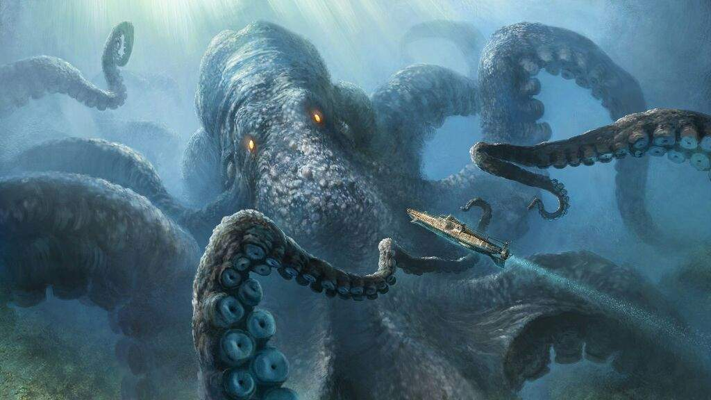

El kraken es una enorme criatura marina de la mitología escandinava descrita comúnmente como un tipo de pulpo o calamar gigante que, emergiendo de las profundidades, atacaba barcos y devoraba a los marineros, No hay mucho que decir de esta criatura, que no se haya dicho ya, ha aparecido en muchas obras.

El mito puede realmente haberse originado de avistamientos de calamares gigantes reales que estimadamente tendrían de 33 a 45 metros de largo, incluyendo los tentáculos.